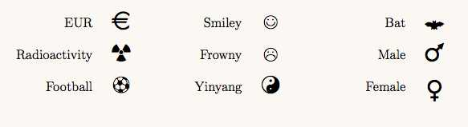

module Tioga::Tutorial::TextForTeX
How to get a “Euro” symbol: Adding Packages to the TeX preamble¶ ↑
You'll probably have your favorite packages that you use in TeX all the time. If you want to have access to them when creating figures as well, you'll need to append the appropriate 'usepackage' commands to the preamble. You can change the preamble used for figures by setting the 'tex_preamble' property in the 'initialize' routine of the Ruby plot file. For instance, here's an example that adds the 'marvosym' package:
def initialize @figure_maker = FigureMaker.default t.tex_preamble = t.tex_preamble + "\n\t\\usepackage{marvosym}\n" ... end
Take a look at the 'marvosym.rb' file in the 'samples/figures' folder for more about this very useful symbol font.
Here's a small sample of what it offers.
